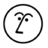

El espacio de trabajo más feliz
Escribe, planifica y colabora con la ayuda de la IA.
Equipos que eligen Notion:


Crea documentos perfectos en equipo
Registra tus ideas, recibe sugerencias de tu equipo y pídele a la IA que se encargue de los detalles finales.
Explora los documentos y notas →-
Bloques de contenido Más de 100 tipos de contenido para comunicar tus ideas.
-
Herramientas colaborativas Diseñado para que los equipos compartan, sugieran y comenten.
-
IA integrada Edita, redacta y traduce. Pide lo que quieras y la IA te ayudará.
Dale forma a tus flujos de trabajo
Todos tus proyectos, objetivos, calendarios, hojas de ruta y mucho más en una sola herramienta, adaptada a tu forma de trabajar y a la de tu equipo.
Explora los proyectos →-
Tareas y pendientes Aborda cualquier proyecto, ya sea grande o pequeño.
-
Vistas personalizadas Visualiza el trabajo en distintos formatos, desde calendarios hasta tableros.
-
Automatizaciones Pon las tareas tediosas en piloto automático.
Encuentra todo al instante
Se acabaron las búsquedas eternas. Nuestra IA integrada encuentra lo que necesites, sin importar si está en Notion o en tus otras apps.
Explora la gestión de conocimientos →-
Espacios de equipo Espacios exclusivos para cada equipo y proyecto.
-
Integraciones Conecta todas tus otras herramientas.
-
Pregúntale a la IA Respuestas certeras de todas tus apps.
"La app para hacerlo todo, ahora con IA"

Potencia tus ideas
La IA de Notion está integrada a tu espacio de trabajo, siempre lista para sugerirte ideas, sintetizar, redactar o buscar lo que necesitas.
Prueba la IA de Notion →-
Respuestas instantáneas Pregunta lo que quieras sobre documentos y proyectos de cualquier equipo.
-
Editor personalizado Genera contenido que sea siempre relevante.
-
Conexiones de la IA beta Accede a información de Slack, Google Drive y más, sin salir de Notion.
Todo lo que necesitas para obtener los mejores resultados
-

Documentos →
Crea cualquier página y comunica todas tus ideas.
-

Wiki →
Un centro para todo tu conocimiento.
-
Proyectos →
Gestiona cualquier proyecto de principio a fin.
-

IA de Notion →
No importa qué quieras buscar o hacer, la IA puede ayudarte.
-

Calendario →
Consulta todos tus eventos en un solo lugar.
-

Objetivos →
Controla el progreso de tus objetios más importantes.
-

Sites →
Convierte cualquier página en un sitio web en minutos.
-

Plantillas →
Da tu primeros pasos con una de las mas de 30 000 plantillas
Empieza hoy
Notion

Notion Calendar